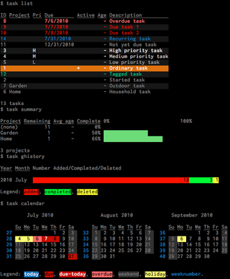

Taskwarrior
Dieser Artikel wurde für die folgenden Ubuntu-Versionen getestet:
Ubuntu 14.04 Trusty Tahr
Zum Verständnis dieses Artikels sind folgende Seiten hilfreich:
Taskwarrior  ist ein in C++ geschriebenes Aufgaben-Verwaltungsprogramm für die Kommandozeile, das unter der GNU General Public License (GPLv2) steht. Taskwarrior wurde ursprünglich von Paul Beckingham geschrieben, mittlerweile wird es durch ein Team um Beckingham sehr aktiv weiterentwickelt.
ist ein in C++ geschriebenes Aufgaben-Verwaltungsprogramm für die Kommandozeile, das unter der GNU General Public License (GPLv2) steht. Taskwarrior wurde ursprünglich von Paul Beckingham geschrieben, mittlerweile wird es durch ein Team um Beckingham sehr aktiv weiterentwickelt.
Mit Taskwarrior lassen sich Aufgaben als To-do-Liste sammeln, als Projekte zusammenfassen und nach bestimmten Suchkriterien abrufen. Taskwarrior eignet sich auch zum Selbstmanagement nach den Getting-Things-Done-Prinzipien.
Taskwarrior lässt sich vollständig über die Kommandozeile bedienen, ist vielfältig konfigurierbar, durch Skripte erweiterbar und plattformübergreifend. Ein Android- und ein Web-Client sind in Planung.
Installation¶
Ab Ubuntu 10.10 ist Taskwarrior in den offiziellen Paketquellen enthalten. Es muss folgendes Paket installiert [1] werden:
task (universe)
 mit apturl
mit apturl
Paketliste zum Kopieren:
sudo apt-get install task
sudo aptitude install task
Bedienung¶
Zur Benutzung öffnet man ein Terminal [2] und gibt darin Befehlszeilen ein, die (anfangs) mit task beginnen.
Syntax¶
Taskwarrior-Befehle sind wie folgt aufgebaut:
[task] [FILTER] [BEFEHL] [ARGUMENTE]
Dabei
sind
[ARGUMENTE]nur bei bestimmtenBEFEHLen erforderlich und[FILTER]gibt an, auf welche Aufgaben sichBEFEHLbezieht. Fehlt diese Angabe, so werden alle Aufgaben berücksichtigt. Ein einfaches Beispiel für[FILTER]ist die von Taskwarrior alsIDangezeigte singulär vergebene Nummer einer Aufgabe. Andere Beispiele werden etwa in den Manpages und der Online-Dokumentation von Taskwarrior beschrieben, sie beziehen sich auf den Aufgaben zugewiesene Attribute.Weshalb
taskundBEFEHLEin eckigen Klammern notiert sind, wird unter Abgekürzte Syntax verraten.
Anzeigen der Aufgaben¶
Damit es etwas anzuzeigen gibt, muss die Aufgabendatenbank zwar erst einmal wie unten dargestellt befüllt werden. Wir stellen hier aber schon einmal die grafischen Früchte des Tippens und des Studierens der Dokumentation in Aussicht, um dazu Mut zu machen:
Der Befehl task list zeigt die Aufgaben an:
task list
ID Project Pri Due Active Age Description 1 13.9.11 4 secs Miete zahlen 2 14.9.11 1 day Bahnkarte kaufen 2 tasks
Der Befehl task long erzeugt eine umfassendere Ausgabe:
task long
ID Project Pri Added Started Due Recur Countdown Age Tags Description 1 13.9.11 13.9.11 monthly 22 hrs 1 min Miete zahlen 2 12.9.11 14.9.11 -1 hr 1 day Bahnkarte kaufen 2 tasks

Der Screenshot deutet (im oberen Teil) die farbliche Gestaltung dieser Listen an.
Taskwarrior erlaubt es, Aufgaben nach verschiedenen Kriterien aufzulisten.
| Berichte | |
| Befehl | Anzeige |
task all | alle Aufgaben |
task completed | erledigte Aufgaben |
task recurring | nur wiederkehrende Aufgaben |
task newest limit:3 | neueste Aufgaben |
task next | nächste anstehende Aufgaben |
Der Befehl
task calendar
stellt die anstehenden Aufgaben in einem Kalender dar (im Screenshot unten).
Der Befehl task history zeigt die monatlichen Aggregate der hinzugefügten, erledigten und gelöschten Aufgaben an:
task history
Year Month Added Completed Deleted Net
2011 September 2 1 0 1
Average 2 1 0 1Mit dem Befehl task summary wird eine numerische und graphische Anzeige des Fortschritts einzelner Projekte erzeugt:
task summary
Bearbeiten der Aufgabendatenbank¶
Hinzufügen einer Aufgabe¶
Der Befehl task add AUFGABENBESCHREIBUNG fügt eine neue Aufgabe hinzu:
task add Miete zahlen
Created task 1
Die hierbei ausgegeben Zahl ist die ID, über die in Befehlen
task ID [BEFEHL] [ARGUMENTE]
und Anzeigen auf die Aufgabe Bezug genommen wird.
Hinweis:
Um zu verhindern, dass die Funktionalität von Taskwarrior durch Sonderzeichen (wie Fragezeichen) gestört wird, empfiehlt es sich, die Beschreibung der Aufgaben in Anführungszeichen zu setzen ("Beschreibung") oder ein doppeltes Minuszeichen (-- Beschreibung) vor die Beschreibung zu stellen.
Aufgaben als erledigt markieren¶
Der Befehl task ID done markiert Aufgaben als erledigt:
task 1 done
Completed 1 'Miete zahlen' Marked 1 task as done
task list
No matches.
Aufgaben löschen¶
Der Befehl task ID delete löscht Aufgaben:
task 1 delete
Permanently delete task 1 'Miete zahlen'? (y/n) y Deleting task 1 'Miete zahlen'
task list
No matches.
Fälligkeitszeitpunkt hinzufügen¶
Der Fälligkeitszeitpunkt einer Aufgabe wird mit dem Befehl task ID mod due:FÄLLIGKEIT ergänzt:
Hinweis:
Die Eingabe der FÄLLIGKEIT erfolgt standardmäßig im Format m/d/Y (Eingabe M/D/YY), doch wird hier das Format d.m.y verwendet.
Wer ein anderes Eingabeformat möchte, kann das durch eine Änderung der Konfigurationsdatei erreichen.
Weitere Infos zum Datumsformat  .
.
task 1 mod due:14.9.11
Modified 1 task
task list
ID Project Pri Due Active Age Description 1 14.9.11 5 mins Miete zahlen
Eventuell kann der Befehl auch ohne mod (bei älteren Versionen als 2.0) zum Erfolg führen:
task 1 due:14.9.11
Das gleiche gilt für wiederkehrende Aufgaben.
Wiederkehrende Aufgaben einrichten¶
Wiederkehrende Aufgaben werden mit dem Befehl task ID mod recur:INTERVALL eingerichtet:
task 1 mod recur:monthly
Task 1 is now a recurring task. Modified 1 task
task long
ID Project Pri Added Started Due Recur Countdown Age Tags Description 1 13.9.11 14.9.11 monthly -9 hrs 1 min Miete zahlen
Nachbearbeitung von Aufgaben weiter¶
Ein Attribut kann auch mehreren Aufgaben auf einmal zugewiesen werden:
| Befehl | Zweck |
task 1,3,5 mod +Arbeit | Aufgaben mit Tags versehen |
task 1-2 mod project:Party | Aufgaben zu Projekten hinzufügen |
task 2 mod priority:H | Aufgaben mit Prioritätseinstufungen versehen |
task 7 mod wait:1.1.2012 | in der Zukunft liegende Aufgaben bis zu einem bestimmten Zeitpunkt verbergen |
task 3 mod "neuer Name" | Aufgabe umbenennen |
task 3 mod depends:6 | Abhängigkeiten zwischen Aufgaben herstellen |
task 5 prepend "Wichtig: " | Aufgaben nachträglich ergänzen (der Beschreibung vorangestellte Ergänzung) |
task 3 append überprüfen | Aufgaben nachträglich ergänzen (der Beschreibung nachgestellte Ergänzung) |
task 4 annotate "Teilweise am 8. September erledigt." | Anmerkungen zu Aufgaben hinzufügen |
task 5 edit | einzelne Aufgaben in einem Editor bearbeiten |
Bearbeitungsbefehle in einer Zeile kombinieren¶
Bearbeitungsbefehle können in Taskwarrior auch kombiniert verwendet werden:
task add Rasen mähen project:Gartenarbeit due:tomorrow recur:biweekly +Rasen +Garten +Arbeit
Export und Import von Aufgaben¶
Taskwarrior stellt eine Export- und Importmöglichkeit zur Verfügung. Der Export erfolgt im JSON-Format auf die Standardausgabe, die man natürlich in eine Datei umleiten kann. z.B.:
task export > DATEINAME.json
Das Einlesen von Dateien erfolgt mit dem Befehl:
task import DATEINAME.json
Bei älteren Versionen von Taskwarrior kann man eventuell auch mittels
task export.csv task export.ical
Abgekürzte Syntax¶
Die Manpage von Taskwarrior bezeichnet die BEFEHLe in
task [FILTER] BEFEHL [ARGUMENTE]
als „Unterbefehle“ (subcommand), wohl als Gegensatz zum Befehl task, der die Kommandozeile im Terminal einleitet
(vgl. update, install usw. bei apt-get).
Ohne Unterbefehl¶
task [FILTER]
wirkt wie
task [FILTER] VORGABEBEFEHL
VORGABEBEFEHL ist dabei der Wert des Konfigurationsparameters default.command, etwa next. Er kann wie unter Anpassungen angedeutet geändert werden. Der mit VORGABEBEFEHL gebildete eigentliche Befehl wird der Ausgabe in eckigen Klammern vorangestellt, mit der Voreinstellung:
[task next]
– es folgt die Tabelle einiger nächster Aufgaben wie nach Eingabe von task next.
Die Taskwarrior-Shell¶
Nach dem Befehl
task shell
werden anstelle von Terminalbefehlen (etwa der Bash) die „Unterbefehle“ von Taskwarrior interpretiert. Eine Befehlszeile hat nun die Gestalt
[FILTER] [BEFEHL] [ARGUMENTE]
Gegenüber der bisher beschriebenen Syntax lässt man also task weg, und Taskwarrior reagiert wie für
task [FILTER] [BEFEHL] [ARGUMENTE]
in der „äußeren Shell“ beschrieben. (Vgl. parted, wo es in etwa umgekehrt ist.)
Korollar: die leere Eingabe¶
In Manpages bedeuten eckige Klammern in Syntaxbeschreibungen, dass ihre Inhalte nur optional sind und weggelassen werden können. In diesem Sinne umfassen die Syntaxbeschreibung anfangs und die Syntax der Taskwarrior-Shell auch die leere Eingabe
(d. h. bei bis auf die Eingabeaufforderung leerer letzter Zeile betätigt man
⏎ ).
Im zweiten Fall wird wie oben angegeben der VORGABEBEFEHL ausgeführt, mit der Voreinstellung
[task next]
usw. Im ersten Fall handelt es sich eigentlich nicht um einen Taskwarrior-Befehl, er wurde nur der Kürze halber eingeschlossen. In der Bash verhält sich die leere Eingabe wie die Eingabe von true oder :, ihr exit-Status ist 0.
Anpassungen¶
Änderungen der Konfigurationsdatei¶
Die Aufgaben werden im Verzeichnis ~/.task gespeichert, die Einstellungen befinden sich in der Datei ~/.taskrc. Mit dem Befehl
task show
lässt sich die aktuelle Konfiguration anzeigen, mit dem Befehl
task config EINSTELLUNG
lassen sich die Einstellungen verändern. Einstellungen lassen sich auch temporär verändern. Mit dem Befehl
man taskrc
erfährt man offline mehr hierzu.
Aussehen¶
Das Aussehen von Taskwarrior lässt sich durch die mitinstallierten Themes, die man in der Konfigurations-Datei ~/.taskrc aktivieren kann, verändern. In den Dateien mit der Endung .theme lassen sich auch individuelle Anpassungen recht frei gestalten. Es empfiehlt sich, die Original-Datei vorher zu sichern.
Erweiterung durch Skripte¶
Die Funktionalität von Taskwarrior kann durch Skripte erweitert werden. Fertige Skripte gibt es bspw. zur Konvertierung der Taskwarrior-Aufgaben in HTML-ol-Tags, zur Anonymisierung der Taskwarrior-Daten oder zum Hinzufügen einer Aufgabe zu Taskwarrior aus einer Thunderbird-Mail.
Manpages¶
Als unmittelbar verfügbare Alternative zu den Online-Einführungen werden mit dem Paket task mehrere „Manpages“ installiert, die insgesamt über eine übliche Manpage hinausgehen, allerdings englisch:
| Aufruf | Inhalt |
man task | Manpage zu task im üblichen Stil |
man task-tutorial | ausführliche Einführung mit Eingabe- und Anzeigebeispielen |
man taskrc | Anzeige und Bearbeitung der Konfiguration, dazu mehr: |
man task-color | Bezeichnungen und Zuweisung der Farben in den Anzeigen |
man task-sync | rechnerübergreifende Aufgabenverwaltung |
man task-faq | FAQ |
Links¶
sehr kurze
EinführungLinksammlung
zu weiteren Informationen und Möglichkeiten von TaskwarriorCheat Sheet
als Referenz
Einführung von Dirk Deimeke in drei Teilen (
/):What's next? - Task management on the commandline
 – Vortragsfolien Ubucon 2011 im PDF-Format
– Vortragsfolien Ubucon 2011 im PDF-FormatTaskwarrior-Vorstellung
– MP4-Video, FLOSS Weekly 175Notizen
 – Übersichtsartikel
– Übersichtsartikel
- Erstellt mit Inyoka
-
 2004 – 2017 ubuntuusers.de • Einige Rechte vorbehalten
2004 – 2017 ubuntuusers.de • Einige Rechte vorbehalten
Lizenz • Kontakt • Datenschutz • Impressum • Serverstatus -
Serverhousing gespendet von